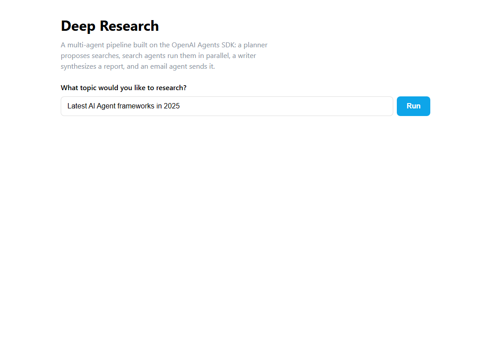

Week 2 · Project Build — Deep Research, Step by Step
Build the deep-research multi-agent team from an empty folder in two stacks: Python with uv (Agents SDK + Gradio), and a React + Node + TypeScript app with a Hono API over @openai/agents.
Build it yourself · Python + uv and React + Node + TypeScriptThis is the Week 2 project: Deep Research — a small team of agents that researches a topic for you and writes a report. You type a question; a planner agent proposes a handful of searches; several search agents run them in parallel; a writer agent turns the findings into a markdown report; and an email agent sends it to you. A web page drives the whole thing and shows progress as it happens. That is the Week 2 project, built entirely on the OpenAI Agents SDK.
We build the same project twice, in two stacks:
- Track A — Python + uv: the original course build. Four agent modules, a research manager, and a Gradio page that streams status updates, deployed to Hugging Face Spaces.
- Track B — React + Node + TypeScript: the same team ported to the JavaScript world with
@openai/agents, served by a small Hono API and driven by a React research page.
Both stacks share the same core idea: a manager orchestrates four agents in a fixed pipeline — plan, search (in parallel), write, email — and reports progress as a stream of status messages so the user is never left staring at a blank screen. Each agent is a plain Agent with instructions and (for some) a tool; the manager is just the glue that runs them in order.
Build it step by step
A runnable version of this week's pipeline lives in week2-py/. It runs with no paid keys by pointing the Agents SDK at a local Ollama server, so you can watch the planner • search • writer flow run end to end:
# 1. Install Ollama from https://ollama.com, then pull the model it uses
ollama pull llama3.2
# 2. Install dependencies (UV_NATIVE_TLS=1 avoids corporate TLS errors)
cd week2-py
UV_NATIVE_TLS=1 uv sync
# 3. Run any script (one at a time - they share the single Ollama queue)
uv run python src/day1_agent.py # a first Agent + Runner.run
uv run python src/day2_tools.py # a function tool, agent-as-tool, and a handoff
uv run python src/day3_structured.py # structured output with a Pydantic output_type
uv run python src/research.py # planner -> canned search -> writer, via a managerEverything runs locally against Ollama with no paid keys. Honest limits: the course uses OpenAI's hosted WebSearchTool and SendGrid, which are paid and hosted; week2-py/ replaces the search with a canned function tool that returns fixed notes and prints email instead of sending it, so it proves the orchestration runs — it does not actually search the web. The 3-billion-parameter llama3.2 also calls tools and emits strict JSON less reliably than the course's frontier models, so some runs are rougher.
New to the manager pattern? What it is and why it matters
A single agent answers one prompt. A manager is ordinary code that runs several agents in a planned order and passes each one's output to the next. Here the manager calls the planner to get a list of searches, runs the search agents in parallel, hands all their findings to the writer, and gives the finished report to the email agent. The agents never call each other directly — the manager decides the order. This is the "orchestrator" shape, and it is what turns four separate agents into one Deep Research tool.
Track A - Python + uv (Gradio)
- Scaffold the project. Either start fresh with
uv init deep-research, or clone the course repo and open its2_openai/deep_researchfolder.uvcreates the project and manages a local.venvfor you. - Add the dependencies:
uv add openai-agents gradio python-dotenv pydantic sendgrid.openai-agentsis the SDK (theAgent,Runnerand tools),gradiogives the web page,python-dotenvloads your keys, pydantic describes the structured outputs, andsendgridsends the email. - Create a
.envfile with your keys (never commit it):
At the top ofOPENAI_API_KEY=sk-proj-... # optional, only to send the email for real: SENDGRID_API_KEY=your-sendgrid-keydeep_research.py,load_dotenv(override=True)reads this file into the environment. - Write the planner, in
planner_agent.py. Define two Pydantic models —WebSearchItem(areasonand aquery) andWebSearchPlan(a list of items) — then anAgentwhoseoutput_type=WebSearchPlan, so it always returns a structured list of searches rather than free text. - Write the search and writer agents. In
search_agent.py, anAgentwith the hostedWebSearchTool(search_context_size="low")(the "low" keeps it cheap) that summarises what it finds. Inwriter_agent.py, aReportDataPydantic model (short summary, markdown report, follow-up questions) and anAgentwithoutput_type=ReportData. - Write the email agent, in
email_agent.py. A@function_toolcalledsend_emailthat posts to SendGrid, and anAgentthat converts the report to HTML and calls that tool once. Set the from address to your verified sender and the to address to yourself. - Write the manager, in
research_manager.py. AResearchManagerclass with anasync def run(self, query)thatyields a status line after each stage and finally the report. It callsplan_searches, thenperform_searches(which uses asyncio to run every search in parallel), thenwrite_report, thensend_email. It also prints a "View trace" link from a generated trace id. - Build the Gradio page, in
deep_research.py. Usegr.Blockswith a heading, aTextbox, a primaryButtonand a markdown output. Wirerun_button.click(fn=run, ...)andquery_textbox.submit(fn=run, ...)to aruncallback that is itself a generator looping overResearchManager().run(query)— so each yielded status streams into the page. - Run and deploy. Run
uv run deep_research.pyto open it locally, then publish it withgradio deployto a Hugging Face Space and set the same keys as Space secrets, so your Deep Research tool is live on a public URL.
The full, verified code for the email agent and the Gradio app is embedded line by line on the Day 5 page, and the planner and manager on the Day 4 page — build those first; this page is the map that joins them into one project.
Track B - React + Node + TypeScript
Track B is the real week2-ts/ project. The same four-agent pipeline moves to the official @openai/agents JavaScript SDK, but now a browser cannot hold the API key, so the pipeline runs on a tiny server and the React page talks to it over HTTP.
- Scaffold a React + TypeScript app with Vite, then make the folder an npm project with ES modules:
npm create vite@latest week2-ts -- --template react-ts cd week2-ts npm init -y # then set "type": "module" in package.json - Add the dependencies with npm:
npm add @openai/agents zod hono @hono/node-server dotenv marked openai, and the dev toolsnpm add -D tsx typescript vite @vitejs/plugin-react @types/node react react-dom.@openai/agentsis the SDK,zoddescribes structured outputs and tool arguments,hono+@hono/node-serverare the server, andmarkedrenders the report markdown in the browser. - Create
src/setup.ts— the shared wiring. It exportsMODEL, aLOCALflag andhasModelAccess(true when there is an OpenAI key or a local base URL), and asendEmailhelper that POSTs to SendGrid but just prints the message whenSENDGRID_API_KEYis unset, so every run finishes. In local mode it repoints the SDK at Ollama and switches tracing off. - Create the three "thinking" agents in
src/research/:planner.ts(an agent with a zodoutputTypegiving aWebSearchPlan),search.ts(an agent with a canned function web-search tool, since the hostedWebSearchToolis OpenAI-only), andwriter.ts(an agent whoseoutputTypeis aReportDataschema). - Create
src/research/email.tsandsrc/research/manager.ts. The email agent wrapssendEmailin atool(...). TheResearchManageris anasync *run(query)async generator that plans, runs the searches withPromise.all, writes, emails, and yields a status string after each stage plus the final report — the TypeScript twin of the Python manager. - Add the CLI entry,
src/research/run.ts. It reads a query from the command line, creates aResearchManager, consumesmanager.run(query)withfor await … of, and prints each status line and the short summary. This isnpm run research "your query". - Create
server/index.ts— a Hono app with one route,POST /api/research. It returns a clear400when no model is configured, otherwise drainsmanager.run(query)and returns{ summary, report, follow_up_questions, status }as JSON. It also serves the built React app fromweb/dist. - Build the React page in
web/src/App.tsx. A component keeps the query, status list and report inuseState,fetchesPOST /api/research, shows the status lines as an ordered list, and renders the report withmarked. Inweb/vite.config.ts, the dev server proxies/apito the API on port 8787. - Wire up the scripts and run. The real
package.jsonalready defines them:
Start the API with"scripts": { "day1": "tsx src/day1.ts", "day2": "tsx src/day2.ts", "day3": "tsx src/day3.ts", "day4": "tsx src/day4.ts", "research": "tsx src/research/run.ts", "api": "tsx server/index.ts", "web": "vite --config web/vite.config.ts", "typecheck": "tsc --noEmit -p tsconfig.json", "build": "tsc --noEmit -p tsconfig.json && vite build --config web/vite.config.ts" }npm run api(Hono on port 8787) and the dev front end withnpm run web(Vite on 5173, proxying/api). Open the Vite URL and research a topic.
New to Hono? What it is and why it matters
Hono is a very small, fast web framework for JavaScript servers. Here it does one job: expose a single POST /api/research endpoint that the React page can call. Keeping the agent pipeline on the server means your secret key never ships to the browser — the browser only ever sends a topic and receives the finished report. It also serves the built React files, so one process can host both the API and the page.
With the API and web dev server both running, the finished page looks like this:

web/src/App.tsx), served through the Hono API. You enter a topic, press Run, watch the status lines appear, and read the report rendered from markdown.- Deep Research: a team of agents that plans searches, runs them in parallel, writes a report, and emails it.
- Four agents on the OpenAI Agents SDK — planner, search, writer, email — joined by a
ResearchManagerthat streams a status line after each stage. - Structured outputs (
WebSearchPlan,ReportData) so the planner and writer return typed data, not free text. - Track A in Python + uv with a Gradio page, deployed to Hugging Face Spaces with
gradio deploy. - Track B in React + Node + TypeScript (
week2-ts/): a HonoPOST /api/researchroute running the same manager, with a React page inweb/src/App.tsx. - Full, line-by-line code is on the Day 4 and Day 5 pages; a free local version lives in
week2-py/.